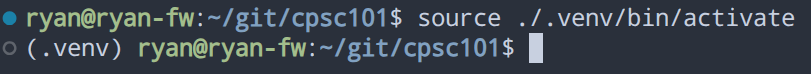

Setting Up Python
Overview
You have two options: install python, or install anaconda package manager. On linux I like to just install python and do things by hand, but I have found in Windows the Anaconda package manager for python is very useful.
Installation
- anaconda - full anaconda environment, graphical user interface (GUI) used to install things. Can make life easier, especially if you're highly visual and nervous with the command line still.
- miniconda - a
smaller commandline version of anaconda. great if you want to get your
hands dirty
- when installing either conda, use both advanced options (add to PATH and default)
- python download just
pure python and do everything yourself! I really suggest using
piporpython -m pipto install everything for you.
Test your install:
Open terminal: PowerShell (WinKey > PowerShell)
- verify conda:
conda --version - verify python:
python --versionorpython3 --version
If you installed full Anaconda, open Anaconda Navigator from your apps list.
Installing new packages:
for conda you can use the terminal:
conda install <package-name>- (e.g.,
conda install numpy) - or you can use the Anaconda Navigator
if you don't have conda:
python -m pip install --user <package-name>- (e.g.,
python -m pip install --user numpy)
this may also work:
pip install --user <package-name>
Using Environments
Python environments are useful sometimes, like a sandbox to keep packages separate and custom for each specific project
create an environment:
python -m venv /path/to/new/virtual/environment- (e.g.,
python -m venv .venv)
activate environment:
- windows:
.\path\to\new\virtual\environment\Scripts\activate(e.g.,
.\.venv\Scripts\activate)If you are trying to activate your environment and running into permission issues. Try first executing this command
Set-ExecutionPolicy -ExecutionPolicy RemoteSigned -Scope CurrentUserThen try activating your virtual environment.
- linux or mac:
source /path/to/new/virtual/environment/bin/activate- (e.g.,
source .venv/bin/activate)
- (e.g.,
When you activate an environment you will see it listed in your terminal:

now when you use conda or pip to install
something it will be in THIS python environment, not your system
installation.
Coding environment
We will be using VSCode as it has the best integration, vscode can save workspaces and load virtual environments automatically
Extensions
I recommend the following extensions:
- Python -
ms-python.python - Python Docstring Generator -
njpwerner.autodocstring - Code Runner -
formulahendry.code-runner - Code Spell Checker -
streetsidesoftware.code-spell-checker
Optional:
- Jupyter -
ms-toolsai.jupyter - Markdown All in One -
yzhang.markdown-all-in-one
Taking notes
I recommend using Jupyter notebooks or simple markdown to take notes. VSCode can help you with both of these.
Markdown
Pure markdown is simple and can keep your life organized.
The following resources can help you learn:
- https://guides.github.com/features/mastering-markdown/ (best)
- https://code.visualstudio.com/docs/languages/markdown (markdown in vscode)
- https://www.markdowntutorial.com/ (another step by step)
Extra extensions
yzane.markdown-pdffabiospampinato.vscode-markdown-todogoessner.mdmathdavidanson.vscode-markdownlint
Jupyter
Jupyter combines markdown with an interactive python terminal to make taking notes much easier!
- install through anaconda or
conda install jupyterorpip install jupyter - here is a tutorial that can help get you started with pure jupyter: link
- Jupyter shortcuts
- you can also use jupyter in VSCode: link